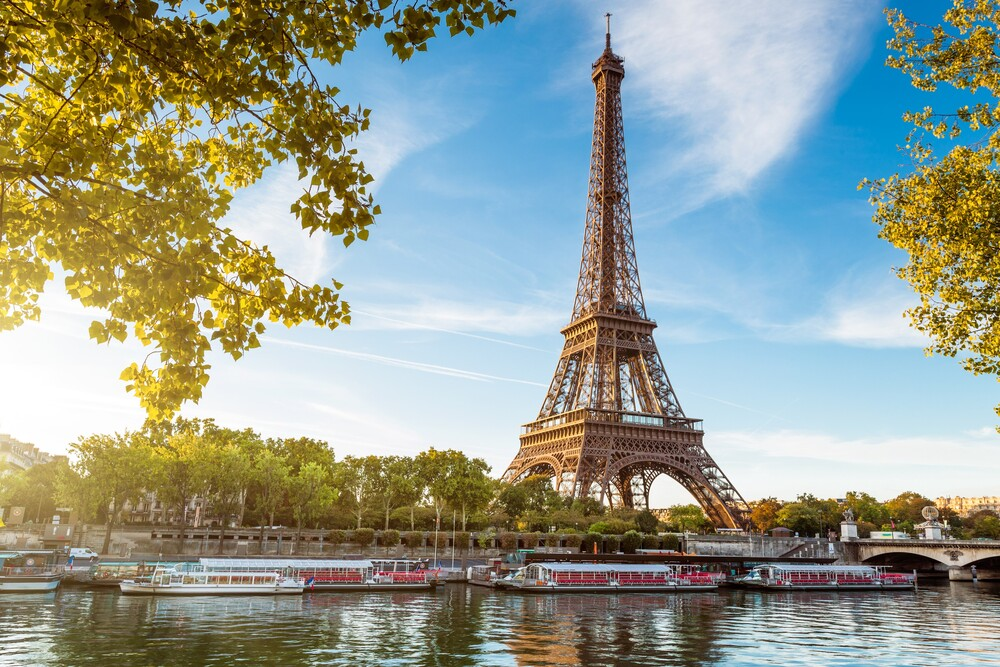

Bienvenido a nuestra pagina de viajes, donde te llevaremos a aventuras emocionantes por todo el mundo.
Descubre lugares impresionantes como:
Paris - La ciudad del amor.
Kioto - Un tesoro cultural de japon.
Nueva York - La ciudad que nunca duerme.
Aqui tienes algunos consejos utiles para tu proximo viaje:
Empaca ligero: Lleva solo lo esencial para mayor comodidad.
Investiga: Investiga sobre la cultura y costumbres locales antes de viajar.
Manten un diario: Documenta tus experiencias para recordarlas siempre.
Evita comparar tu viaje: Cada experiencia de viaje es unica.
Echa un vistazo a estas impresionantes imagenes de nustros viajes:


¡Esperamos que te inspire para tu proximo viaje!